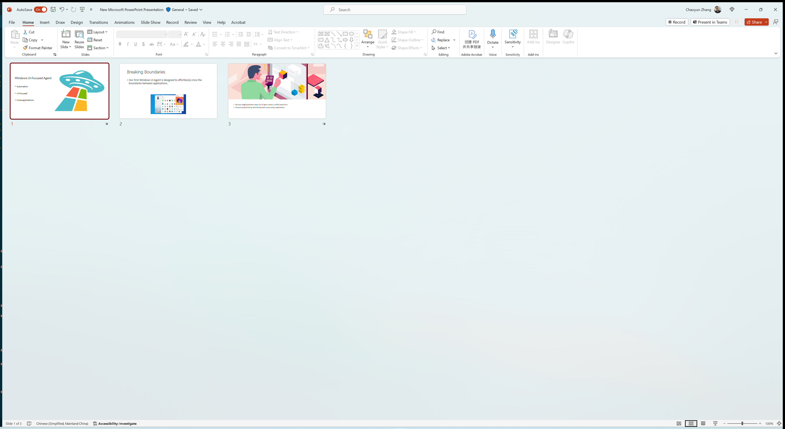
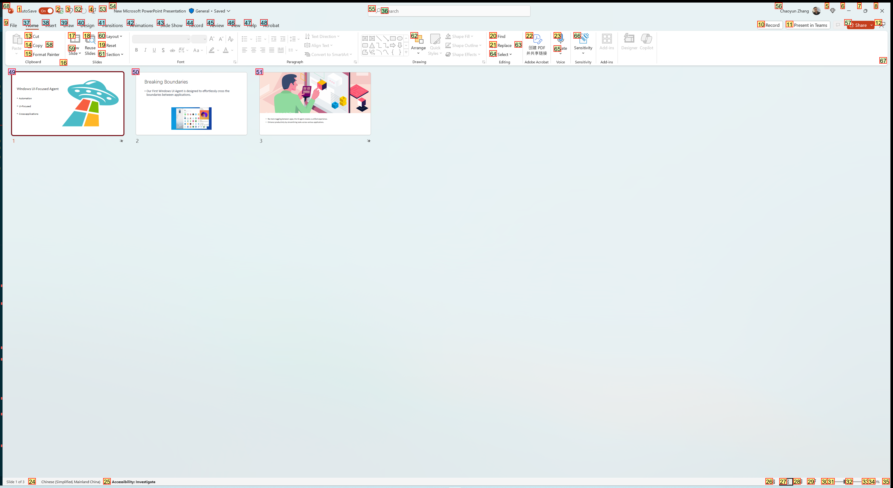
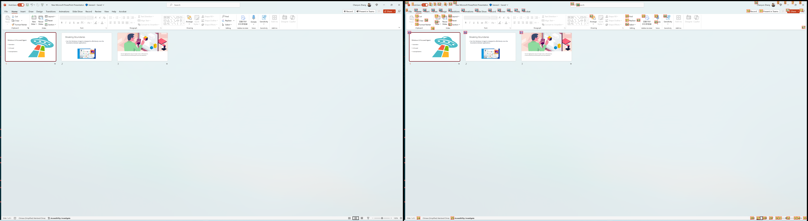
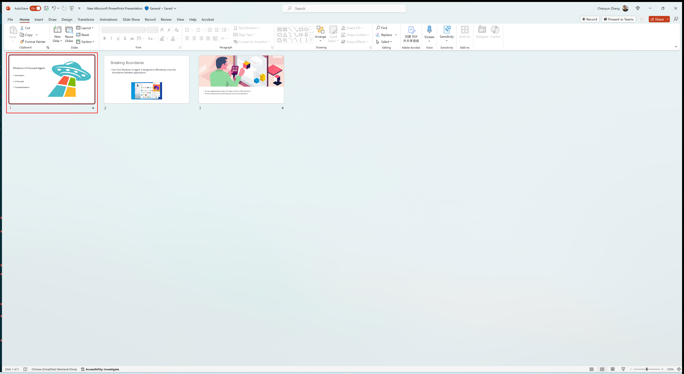

Screenshot Logs
UFO also save desktop or application screenshots for debugging and evaluation purposes. The screenshot logs are stored in the logs/{task_name}/.
There are 4 types of screenshot logs generated by UFO, as detailed below.
Clean Screenshots
At each step, UFO saves a clean screenshot of the desktop or application. The clean screenshot is saved in the action_step{step_number}.png file. In addition, the clean screenshots are also saved when a sub-task, round or session is completed. The clean screenshots are saved in the action_round_{round_id}_sub_round_{sub_task_id}_final.png, action_round_{round_id}_final.png and action_step_final.png files, respectively. Below is an example of a clean screenshot.

Annotation Screenshots
UFO also saves annotated screenshots of the application, with each control item is annotated with a number, following the Set-of-Mark paradigm. The annotated screenshots are saved in the action_step{step_number}_annotated.png file. Below is an example of an annotated screenshot.

Info
Only selected types of controls are annotated in the screenshots. They are configured in the config_dev.yaml file under the CONTROL_LIST field.
Tip
Different types of controls are annotated with different colors. You can configure the colors in the config_dev.yaml file under the ANNOTATION_COLORS field.
Concatenated Screenshots
UFO also saves concatenated screenshots of the application, with clean and annotated screenshots concatenated side by side. The concatenated screenshots are saved in the action_step{step_number}_concat.png file. Below is an example of a concatenated screenshot.

Info
You can configure whether to feed the concatenated screenshots to the LLMs, or separate clean and annotated screenshots, in the config_dev.yaml file under the CONCAT_SCREENSHOT field.
Selected Control Screenshots
UFO saves screenshots of the selected control item for operation. The selected control screenshots are saved in the action_step{step_number}_selected_controls.png file. Below is an example of a selected control screenshot.

Info
You can configure whether to feed LLM with the selected control screenshots at the previous step to enhance the context, in the config_dev.yaml file under the INCLUDE_LAST_SCREENSHOT field.